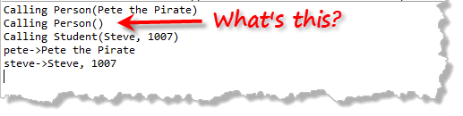

Derived-class Constructors
The derived Student class already has a constructor. Go ahead and modify it as well, so it prints a message like this:
Student::Student(const string sname, long sid)
{
setName(sname);
studentID = sid;
cout << "Calling Student(" << name << ", "
<< sid << ")\n";
}Modify main inside client.cpp to create two objects, one Person and one Student, and to print out their info, just like the existing example.
Person pete("Pete the Pirate");
Student steve("Steve", 1007);
cout << "pete->" << pete.getName() << endl;
cout << "steve->" << steve.getName() << endl;Type make run to compile and run the modified program. You'll see that instead of only two constructor calls, which you'd expect, both Person constructors have been called, along with the Student constructor, for a total of three, even though only two objects are created. Why?

 This course content is offered under a
CC
Attribution Non-Commercial license. Content in this course
can be considered under this license unless otherwise noted.
This course content is offered under a
CC
Attribution Non-Commercial license. Content in this course
can be considered under this license unless otherwise noted.